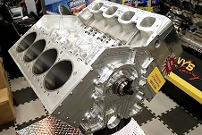
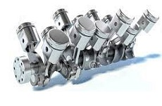

Er zijn verschillende soorten motoren, maar de meest bekende zijn:
- De 4 cilinders in lijn in: de audi S3, de ford focus st ecoboost, de porshe 718 boxter, de subaru brz, de ford mustang ecoboost en vele anderen
-De inline 6 in: BMW M3 E36 3.2, Aston Martin DB4 GT, Porsche 911 2.7 Carrera RS en nog veel meer
-De 6-cilinder V in: de alfa Romeo 147 en 156 GTA, de mercedes amg C32, de nissan 350Z, de bmw M3 E46 en vele anderen
-De 8-cilinder V in: de audi s6 C5, de porshe cayenne S, de jaguar XKR, de maserati quattroporte, de mercedes C63 amg en vele anderen

> -De 10 cilinders in V in: de lamborghini huracan evo, de lexus LFA, de bmw m5 e60 v10 en vele anderen

-De 12 cilinder V in: de Ferrari 812 Competizione, de Aston Martin DB11, de Bentley Continental GT Speed en nog veel meer
-De 16 cilinders in W zijn zeer zelden gebruikt omdat ze erg krachtig en erg groot zijn. Het wordt voornamelijk gebruikt door Bugatti in de Veyron, de Chiron, la voiture noire